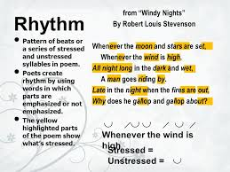
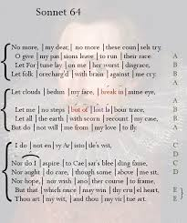

Designer:Lihuan_BFSU
Click the title to visit that section.
♦ History
♦ Elements
♦ Forms
Prosody
Prosody is the study of the meter, rhythm, and intonation of a poem. Rhythm and meter are different, although closely related. Meter is the definitive pattern established for a verse (such as iambic pentameter), while rhythm is the actual sound that results from a line of poetry. Prosody also may be used more specifically to refer to the scanning of poetic lines to show meter.
Rhythm

The methods for creating poetic rhythm vary across languages and between poetic traditions. Languages are often described as having timing set primarily by accents, syllables, or moras, depending on how rhythm is established, though a language can be influenced by multiple approaches. Japanese is a mora-timed language. Syllable-timed languages include Latin, Catalan, French, Leonese, Galician and Spanish. English, Russian and, generally, German are stress-timed languages.Varying intonation also affects how rhythm is perceived. Languages can rely on either pitch, such as in Vedic Sanskrit or Ancient Greek, or tone. Tonal languages include Chinese, Vietnamese and most Subsaharan languages.
Metrical rhythm generally involves precise arrangements of stresses or syllables into repeated patterns called feet within a line. In Modern English verse the pattern of stresses primarily differentiate feet, so rhythm based on meter in Modern English is most often founded on the pattern of stressed and unstressed syllables (alone or elided). In the classical languages, on the other hand, while the metrical units are similar, vowel length rather than stresses define the meter.Old English poetry used a metrical pattern involving varied numbers of syllables but a fixed number of strong stresses in each line.
The chief device of ancient Hebrew Biblical poetry, including many of the psalms, was parallelism, a rhetorical structure in which successive lines reflected each other in grammatical structure, sound structure, notional content, or all three. Parallelism lent itself to antiphonal or call-and-response performance, which could also be reinforced by intonation. Thus, Biblical poetry relies much less on metrical feet to create rhythm, but instead creates rhythm based on much larger sound units of lines, phrases and sentences. Some classical poetry forms, such as Venpa of the Tamil language, had rigid grammars (to the point that they could be expressed as a context-free grammar) which ensured a rhythm. In Chinese poetry, tones as well as stresses create rhythm. Classical Chinese poetics identifies four tones: the level tone, rising tone, departing tone, and entering tone.
The formal patterns of meter used in Modern English verse to create rhythm no longer dominate contemporary English poetry. In the case of free verse, rhythm is often organized based on looser units of cadence rather than a regular meter. Robinson Jeffers, Marianne Moore, and William Carlos Williams are three notable poets who reject the idea that regular accentual meter is critical to English poetry. Jeffers experimented with sprung rhythm as an alternative to accentual rhythm.
Meter

Prosody is the study of the meter, rhythm, and intonation of a poem. Rhythm and meter are different, although closely related. Meter is the definitive pattern established for a verse (such as iambic pentameter), while rhythm is the actual sound that results from a line of poetry. Prosody also may be used more specifically to refer to the scanning of poetic lines to show meter.
In the Western poetic tradition, meters are customarily grouped according to a characteristic metrical foot and the number of feet per line. The number of metrical feet in a line are described using Greek terminology: tetrameter for four feet and hexameter for six feet, for example. Thus, "iambic pentameter" is a meter comprising five feet per line, in which the predominant kind of foot is the "iamb". This metric system originated in ancient Greek poetry, and was used by poets such as Pindar and Sappho, and by the great tragedians of Athens. Similarly, "dactylic hexameter", comprises six feet per line, of which the dominant kind of foot is the "dactyl". Dactylic hexameter was the traditional meter of Greek epic poetry, the earliest extant examples of which are the works of Homer and Hesiod. Iambic pentameter and dactylic hexameter were later used by a number of poets, including William Shakespeare and Henry Wadsworth Longfellow, respectively. The most common metrical feet in English are:
• iamb – one unstressed syllable followed by a stressed syllable (e.g. des–cribe, in–clude, re–tract)
• trochee – one stressed syllable followed by an unstressed syllable (e.g. pic–ture, flow–er)
• dactyl – one stressed syllable followed by two unstressed syllables (e.g. an–no–tate, sim–i–lar)
• anapest – two unstressed syllables followed by one stressed syllable (e.g. com–pre–hend)
• spondee – two stressed syllables together (e.g. heart–beat, four–teen)
• pyrrhic – two unstressed syllables together(rare, usually used to end dactylic hexameter)
There are a wide range of names for other types of feet, right up to a choriamb, a four syllable metric foot with a stressed syllable followed by two unstressed syllables and closing with a stressed syllable. The choriamb is derived from some ancient Greek and Latin poetry.Languages which utilize vowel length or intonation rather than or in addition to syllabic accents in determining meter, such as Ottoman Turkish or Vedic, often have concepts similar to the iamb and dactyl to describe common combinations of long and short sounds.
Each of these types of feet has a certain "feel," whether alone or in combination with other feet. The iamb, for example, is the most natural form of rhythm in the English language, and generally produces a subtle but stable verse.Scanning meter can often show the basic or fundamental pattern underlying a verse, but does not show the varying degrees of stress, as well as the differing pitches and lengths of syllables.
Metrical patterns
Different traditions and genres of poetry tend to use different meters, ranging from the Shakespearean iambic pentameter and the Homeric dactylic hexameter to the anapestic tetrameter used in many nursery rhymes. However, a number of variations to the established meter are common, both to provide emphasis or attention to a given foot or line and to avoid boring repetition. For example, the stress in a foot may be inverted, a caesura (or pause) may be added (sometimes in place of a foot or stress), or the final foot in a line may be given a feminine ending to soften it or be replaced by a spondee to emphasize it and create a hard stop. Some patterns (such as iambic pentameter) tend to be fairly regular, while other patterns, such as dactylic hexameter, tend to be highly irregular. Regularity can vary between language. In addition, different patterns often develop distinctively in different languages, so that, for example, iambic tetrameter in Russian will generally reflect a regularity in the use of accents to reinforce the meter, which does not occur, or occurs to a much lesser extent, in English.
Some common metrical patterns, with notable examples of poets and poems who use them, include:
• Iambic pentameter (John Milton, Paradise Lost; William Shakespeare, Sonnets)
• Dactylic hexameter (Homer, Iliad; Virgil, Aeneid)
• Iambic tetrameter (Andrew Marvell, "To His Coy Mistress"; Alexander Pushkin, Eugene Onegin; Robert Frost, Stopping by Woods on a Snowy Evening)
• Trochaic octameter (Edgar Allan Poe, "The Raven")
• Trochaic tetrameter (Henry Wadsworth Longfellow) "The Song of Hiawatha"; the Finnish national epic "Kalevala" is also in trochaic tetrameter, the natural rhythm of Finnish and Estonian.
• Alexandrine (Jean Racine, Phèdre)